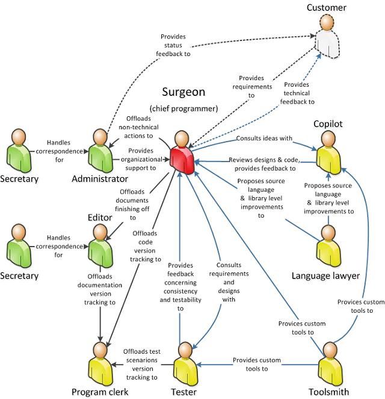
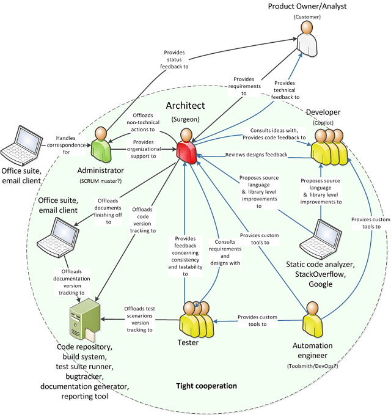
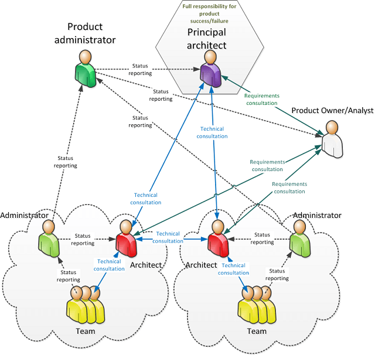
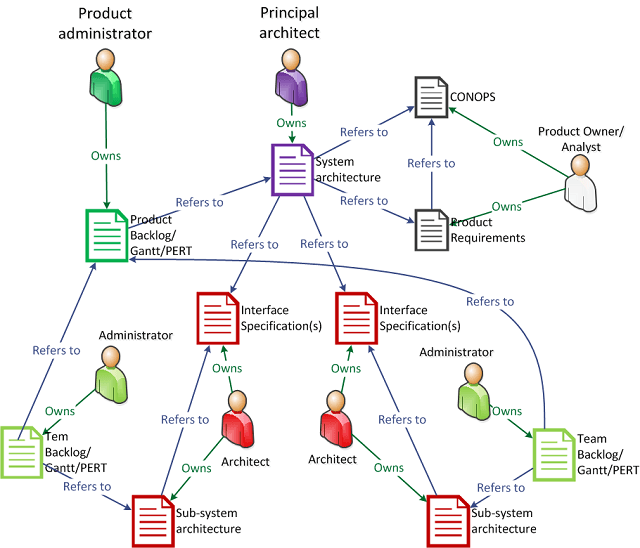
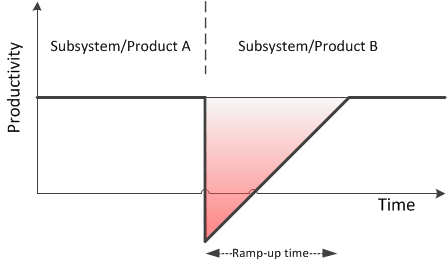
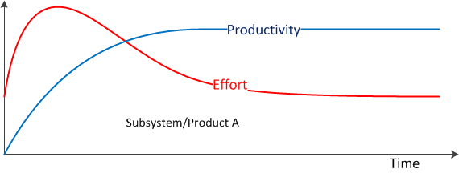
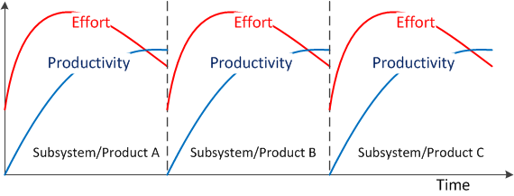
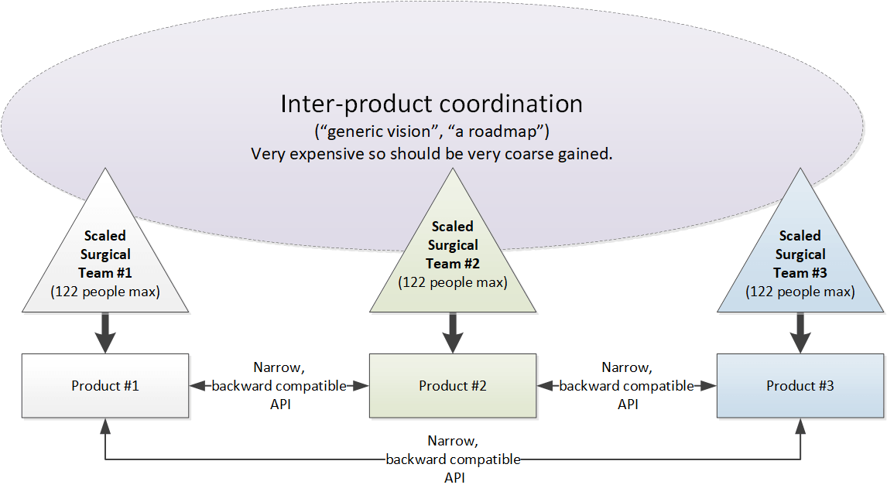

“The Surgical Team” in XXI Century
Disclaimer
This article is my personal opinion about how the software development shall be organized. This is not intended to be a scientific paper, so many statements are intentionally bold and direct to make the text short. I did my best to present the approach based on my own observations and available sources, but I am not a business theoretician, professional manager nor sociologist, and I may be totally wrong. Moreover, this article is unavoidably written from developer/architect perspective, and I’m open to other perspectives as well. I also haven’t had opportunity to practice the presented approach exactly as described, so treat it with a dose of skepticism.
The Original “Surgical Team”
In his timeless book “The Mythical Man-Month”, Fred Brooks proposes after Harlan Mills the optimal team structure to tackle software development. He proposes that “each segment of a large job be tackled by a team, but that the team is organized like a surgical team rather than a hog-butchering team. That is, instead of each member cutting away on the problem, one does the cutting and the others give him every support that will enhance his effectiveness and productivity.”
The proposed team structure is presented in Figure 1. I added a
Customer which was obviously missing from the original concept.

Further Brooks describes members’ roles as follows:
“The surgeon […] (chief programmer) […] personally defines the functional and performance specifications, designs the program, codes it, tests it, and writes its documentation.” He also decides who he works with. His competence is crucial.
“The copilot […] is the alter ego of the surgeon […]. His main function is to share in the design as a thinker, discussant, and evaluator. The surgeon tries ideas on him, but is not bound by his advice. He knows all the code intimately. He researches alternative design strategies. He […] serves as insurance against disaster to the surgeon.”
“The administrator […] handles money, people, space, and machines, and […] interfaces with the administrative machinery of […] the organization.”
“The editor takes [document drafts] produced by the surgeon and criticizes [them], reworks [them], provides [them] with references and bibliography, nurses [them] through several versions, and oversees the mechanics of production.”
“Two secretaries […] handle project correspondence and non-product files.”
“The program clerk [is] responsible for maintaining all the technical records of the team in a programming-product library. [He is responsible] for both machine-readable and human-readable files.”
“The toolsmith […] is responsible […] for constructing, maintaining, and upgrading special tools—mostly interactive computer services—needed by his team. The tool-builder will often construct specialized utilities, catalogued procedures, macro libraries.”
“The tester […] is both an adversary who devises system test cases from the functional specs, and an assistant who devises test data for the day-by-day debugging. He would also plan testing sequences and set up the scaffolding required for component tests.”
“The language lawyer [is a master of] a programming language. [He] can find a neat and efficient way to use the language […] [by doing] small studies […] on good technique.”
The difference between a team of peers is that “partners divide the work, and each is responsible for design and implementation of part of the work. In the surgical team, the surgeon and copilot [own] of all of the design and all of the code. This saves the labor of allocating [responsibilities and] also ensures the conceptual integrity of the work.” Moreover in “the conventional team the partners are equal, and the inevitable differences of [interest and] judgment must be talked out or compromised. [...] In the surgical team, there are no differences of interest, and differences of judgment are settled by the surgeon [alone]. These two differences—lack of division of the problem and the superior-subordinate relationship—make it possible for the surgical team to act [as one], yet the specialization of function of the remainder of the team is the key to its efficiency, for it permits a radically simpler communication pattern among the members.”
The Modern “Surgical Team”
Few decades have passed since Brooks’es book has been published. Considering technology advances, the original model can to be adjusted as presented in Figure 2.

In the modern “Surgical team”, Secretaries, Editor and Language Lawyer have been replaced by combination of hardware and software, which allowed to increase the number of technical members of the team, and consequently its throughput. The modern “Surgical Team” members’ roles are as follows:
The architect “personally defines the functional and performance specifications, designs the program [… ] and writes its documentation.” Moreover, he deconstructs architectural changes into units of work and assigns them to team members. He constantly consults designs with developers and testers, and though he shall respect their feedback, he is the one who makes final decisions. He may write code himself though it is not necessary as long as he reviews and approves merge requests. He may not be the one responsible for performing code merges, but he must have a veto right, which shall be respected. The architect shall exhibit at least some “people skills” (personality traits such as medium to high openness to experience, medium extraversion, low to medium neuroticism and medium agreeableness help, though can be compensated with conscious effort to some extent) and his technical competence is essential as he is responsible for anticipating and avoiding future technical problems (the architect is conceptually equivalent to Toyota's "shusa"). Ideally, being the most experienced, he has to have influence on hiring and letting other team members go. In case the whole team does badly, upper management shall dismiss the architect and let the new one recreate the team (the same approach is used in sports, where a coach gets sole responsibility for performance of a team).
The administrator generally performs the same duties as in original model. Additionally, he enforces the process (like SCRUM Master), collects status reports and maintains work backlog. Even though he is architect's subordinate, they should work in tandem as they complement each-other. The administrator shall exhibit high “people skills” to compensate possible architect’s deficiencies. Moreover, being more ordered and conservative (high in conscientiousness and low in openness to experience) should help balancing architect’s (possible) chaotic creativity and promote sustainable pace and process. Both architect and administrator shield the team from unnecessary communication burden, but do not restrict communication within team or with other teams.
Developers are responsible for coding the solution. Even though not depicted, they shall have they own hierarchy based on competence, talents and experience. It is important for at least one of them to be able to substitute the architect in case of crisis.
Testers are responsible for designing and automating system tests. As in case of developers, they shall have their own hierarchy. It is important for at least one of them to have a holistic understanding of the software being built to provide quality feedback to architect. Testers, even though technically competent, seldom serve as architect substitute because of a different mindset they present (build vs destroy).
The Automation Engineer’s responsibilities are generally the same as Toolsmith’s ones. Additionally, he should be responsible for building and maintaining hardware prototypes and testing rigs if such are required.
Meritocracy
The presented approach is based on four pillars:
- competence
- hierarchy
- ownership, and
- respect
I have already written in “Software Development as a Research in Domain of Value” and “The Psychological Reasons for Software Project Failures” about competence being a crucial foundation of software development.
Contrary to Agile Software Development and especially Extreme Programming, I stand on the position that hierarchy is innate to human beings. People tend to accept hierarchy if it is built on competence, hence it shouldn’t be worked against but leveraged, because with hierarchy an ownership comes naturally. As Gerald M. Weinberg states it: “it is useful to consider the work of the team in two categories – work dedicated at accomplishing the team goals and work dedicated at maintaining the effective functioning of the team […]. To social psychologists, these activities are designated as “task-oriented” and “maintenance-oriented” […]. In certain type of groups, and often in programming teams, the group tends to choose two complimentary leaders – a task-specialist, who allocate, and coordinates the work; and a maintenance-specialist, who irons out conflicts among group members or between individual goals and group goals. The designated leader, because of his role in carrying external goals into the group, is most often in the task-specialist position, although, as we know, he may be replaced by the group if he does not display necessary competence. The maintenance-specialist – who will most often be best-skilled person in the group – can come from anywhere. He may not be particularly good programmer in his own fight, though may well be. Very often he will be a she.
In the cross cultural study of nuclear families – father, mother and their children – this same division into task and maintenance activities was usually found at least in the cultural ideal. In most cultures, including ours […], the ideal father was the task-specialist and the ideal mother was maintenance-specialist.”
As in a family or tribe, the hierarchy in the modern “Surgical Team” shall be built upon abilities, competence and talent, with clear responsibility division that strengthens the notion of ownership of a particular unit of work.
In the surgical team of XXI century, every artifact shall have a designated owner. With ownership comes responsibility for quality of the artifact which is assessed by people who consume it (for example, consumers of designs are developers, and consumers of code are other developers who need to review it or interface with it). Common ownership as advocated by Extreme Programming can only emerge as the highest form of individual ownership in highly stable teams of competent people who additionally developed interpersonal relationships (a.k.a. friendship), and feel obligated to support one another. In other situations, collective ownership will end up with tragedy of commons caused by social loathing. Each team member will complete his assignments with least possible effort pushing consequences of low quality on others (quality of product artifacts becomes "the commons"). This is also the reason why software development outsourcing is not capable of producing quality solutions.
The last pillar is respect. It is important for architect and administrator not to treat developers, testers and automation engineers as replaceable grunts (a.k.a. resources). An architect being the front-man of the team needs to be knowledgeable and experienced but it doesn’t mean that developers or testers aren’t. Often, the only difference between developer (or tester or automation engineer) and architect is that the latter is willing to put his designs on paper whereas the former being equally talented, knowledgeable and experienced is heavily and happily “code-oriented”. Without mutual respect, the team will not be very effective since internal conflicts will keep tearing it apart. Unfortunately, the true respect needs to be honestly earned, which makes the team assembly process a challenge.
Resources as key efficiency element
The Surgical Team constitutes a single coherent, independent living unit in organization. Just of like a cell in a complex organism, it has its own identity and agenda. In order to work efficiently it needs not only a stable environment physical environment (temperature, pressure, humidity, etc.), but also a surplus of nutritious substances. In this context, “surplus” does not mean “unlimited”, but rather “readily available”. Body cells operate mostly independently by simply ingesting nutritious substances from surrounding body liquids without asking permission from the central authority. Concurrently the not-so-central authority in the body just makes sure that the level of nutritious substances in circulation is reasonably stable. This constitutes a very simple and efficient system with minimum communication and lightweight regulatory overhead.
In manufacturing domain, this idea is embodied in Taiichi Ohno’s “inventory supermarket”. In software development domain, this idea can be implemented in extremely simple way, because most of required inventory can be quickly bought. This means that in order for it to work, a surgical team shall manage its own inventory budget in form of company credit card being in possession of the the Administrator. Every time the team needs something (be it hardware, software, cloud based services, training, business trips, or just sodas and pizzas) it should be able to buy it without approval from the rest of organization (because procurement processes can take months). In order to control the splendid a yearly expense cap + receipts should be enough.
Scaling Up
Scaling the solution up requires repeating the hierarchy pattern multiple times, as depicted in Figure 3. The important thing is to preserve the hierarchy with principal architect on top being entirely responsible for the whole product and a product administrator being his subordinate-peer. This creates the engineer driven organization where responsibility follows technical competence.

In the depicted situation, the most daily reporting communication happens among administrators and most technical/strategic communication happens among architects and products owners/analysts. This lets each individual to concentrate on his core responsibilities.
In order for this organizational structure to be effective, it needs to follow the technical structure of the product (reversed Conway’s Law), so that interpersonal communication paths follow the software communication paths. The most effective approach so far is to employ a set of “documents” that follow and support the unified organizational-technical structure as depicted in Figure 4 (as Winston W. Royce expressed it: "The first rule of managing software development is ruthless encorcement of documentation requirements.").

The “documents” depicted do not need to be formalized in a paper form or in any document-like format (e.g., product backlog is a set of records being actively maintained throughout the product lifetime), but the ownership and referential order needs to be clear.
Stable Teams Matter
Fred Brooks specifies conceptual integrity as the main quality of a software system. According to him, this can be achieved only if the system has been design by a single person or a small closely cooperating group. There is also great performance benefit of having the whole system/subsystems in one’s head for architects, developers and testers. By working on the same product for a long time, people not only gain readily available knowledge of the technology but also of the domain, which reduces necessary communication and speeds up all the small decisions that need to be taken every day. Moving people between products often impacts this substantially as people have a limited ability to retain information.
One of the most harmful business strategies is treating people as of-the-shelf interchangeable resources and moving them often between products/subsystems in order to provide 100% utilization. This strategy almost always backfires (nice explantion of this phenomenon here), because, as depicted at Figure 5, each person brought to a new product requires a ramp-up time to become productive. This ramp-up time is often long enough to cost more (in terms of lost productivity), than the cost of keeping this person unoccupied for a while.

There is another (a long- term) cost of shuffling people around. Moving people requires them to reload a lot of knowledge and information into their brains repeatedly. While the younger may be able to do it quickly, this is not so for older ones which expect to profit in the long-term from intimate knowledge about one subsystem or application. In stable teams, people can monetize the acquired knowledge in terms of reduced effort per unit of productivity as depicted on Figure 6.

The effect of moving people between products is depicted in Figure 7.

In this situation, the effort-to-productivity ratio is constantly high. This imposes intellectual fatigue impacts performance and motivation, if the situation prolongs. After some time, people realize that the mental fatigue is not worth it and switch job to a less tiring one. This is a double productivity hit for the company. Additionally shuffling devs/architects between products/subsystems makes them prefer short-term to long-term gains. In other words, quality goes down the drain as they will not be the ones to benefit from it in future.
The last negative aspect of shuffling developers between products is, that it makes satisfying the basic needs of developers impossible. I wrote in “Software Development as a Research in Domain of Value” that basic needs of developers are Income, Autonomy, Mastery and Purpose. Working on the same product for longer time lets developers develop emotional attachment to it. Watching it grow with useful features over a period of time fulfills the need of Purpose. Being able to improve it gradually satisfies the need of Mastery. Being able to plan and proceed with development roadmap fulfills the need of Autonomy. All of them amplify the feelings of ownership, responsibility and pride. Then these are gone, all is left is a dull feeling of being a replaceable cog. Quality suffers, morale suffers, developer turnover grows and erosion kicks in.
Small Teams Matter
The original “surgical team” consists of 10 people. Is has been observed many times that the most effective teams consist of 5 to 9 people and the maximum number is around 12 over which teams naturally divide into smaller ones. The other hint is the Price’s law which states, that in case of creative endeavors half of outcome comes from a square root of all contributors. In the new “surgical team” they should be the architect, the senior developer and the senior tester.
Scalability limit
The “scaled surgical team” approach has its limits. Considering that 12 subordinates is a maximum number at every level of the hierarchy, the maximum effective system development team can only consist of about 122 people forming three layers as depicted in Figure 3 (10 teams of 12 + principal architect + product administrator), which is loosely aligned with “Dunbar’s number”. Up to this number every architect is able to directly work on code if required, and the principal architect is able to support or temporary substitute every architect (or in extreme emergencies even work on code). This situation every supervisor can actually do the work he is responsible for being done.
Pushing the number beyond this point will lead to two alternative outcomes. Keeping the hierarchy flat grows teams beyond 12 people and causes them naturally split into sub-teams reducing intra-team cooperation. It also exceeds the managerial capacity of architects. This reduced team integrity impacts productivity in a non-linear manner (adding team members can have not only diminishing returns but actually a negative productivity impact). On the other hand building hierarchy up requires introduction of middle management, which detaches principal architect from solution being built by introducing thermocline of truth into organization. Additionally it is difficult to precisely assign responsibilities to middle managers (middle architects?), as they usually do not align with system architecture. In this situation middle managers need to justify their positions with impressions rather than results by generating information noise. At this point office politics usually kicks-in with negative consequences for the company.
The limit on “scaled surgical team” does not limit the size of the company. A company can develop many independent products (systems) by employing many, moastly autonomous “scaled surgical teams”. In order for it to be successful each product needs to have independent release cycle to avoid costly coordination and inter product integration needs to be treated by each “scaled surgical team” as an integration with a third party product performed through narrow, carefully defined, stable and backward compatible APIs (quality design pays big here) as depicted on Figure 8.

The company shall have a very generic vision of how the products shall interoperate over their lifetime (a roadmap), but there shall be a broad acceptance towards temporary divergence. In other words there shall be common acceptance that at every point in time something will not work optimally or as expected. This is tradeoff between perceived product suite quality and often prohibitive cost of tight inter-product coordination resulting in lockstep releases.
How many products?
In order to answer this question let’s assume that each product can head in a small number of mutually exclusive directions (for example 2) during its lifetime. To make it more tangible lets imagine that a backend data storage service can be developed to be either like a database or more like a message broker but not effectively both at the same time. Now, let’s assume that a company has a small number of interoperating products (for example 4). With these numbers in place we have 2*4 = 8 possible roadmaps for entire suite to analyze. This is a manageable number, but the ugly truth is that since each product probably needs to cooperate with all other, the number of possible system permutations to analyze is 4*4*2 = 32 or more generally
number_of_products2 * average_number_of_possible_directions_per_product.
Since quadratic function grows steeply, the number of possible permutations to analyze, even for small numbers, quickly reaches beyond human cognitive abilities. This means that the number of interoperating products per company shall be “handful”. Of course if the products are totally independent the presented limit does not apply.